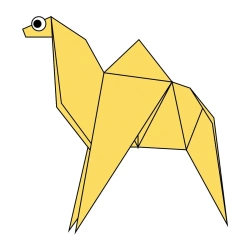
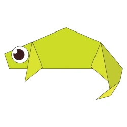
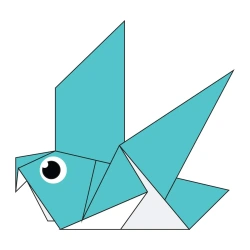
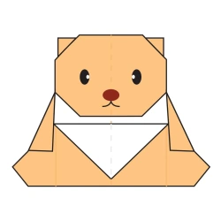

Camello
- Las orejas del camello son peludas.
- El camello puede moverse facilmente por la arena gracias a sus patas especialmente diseñadas para ello.
- Cuando encuentran agua, beberan la mayor cantidad posible.

Camaleones
- Los camaleones son reptiles que forman Parte de la familia de la iguana.
- Cambiar el color de la piel es una parte importante.
- La mayoria de los camaleones tienen una cola prensil que usan para envolverse en las ramas de los arboles.

Palomas
- Las palomas practican la endogamia exactamente hasta 21 veces antes de que se muestren los efectos negativos en las crías.
- Las palomas siempre ponen al menos 2 huevos, cada uno de los cuales es macho y hembra.
- Los polluelos abandonan el nido después de 10 a 36 días.

Osos
- El olfato de los osos es superior al de los perros
- Los osos comen casi cualquier cosa
- Tienen una gran inteligencia

Pandas
- A los pandas les gusta vivir una vida solitaria
- Los pandas viven principalmente en bosques de bambu comen alrededor de 12 a 36 kilos de bambu al dia
- Son muy buenos trepadores desde los 7 meses inician es trepar arboles

Cigarras
- Las cigarras tienen cinco ojos
- Las cigarras macho cantan y se tapan los oidos para evitar escuchar su propio canto
- Pueden ser atraidas por la cortadora de cesped